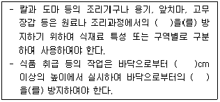

식품산업기사 (2016-08-21 기출문제)
1과목: 식품위생학
1. 농약잔류허용기준 설정 시 안전수준 평가는 ADI 대비 TMDI값이 몇 %를 넘지 않아야 안전한 수치인가?
- 10%
- 20%
- 40%
- 80%
(정답률: 55%)

2. 식품가공 중 생성되는 유해물질이 아닌 것은?
- 벤조피렌
- 아크릴아마이드
- 에틸카바메이트
- 옥소홍데나필
(정답률: 72%)
3. 작업위생관리로 적절하지 않은 것은?
- 조리된 식품에 대하여 배식하기 직전에 음식의 맛, 온도, 이물, 이취, 조리 상태 등을 확인하기 위한 검식을 실시하여야 한다.
- 냉장식품과 온장식품에 대한 배식온도관리기준을 설정, 관리하여야 한다.
- 위생장갑 및 청결한 도구(집게, 국자 등)를 사용하여야 하며, 배식중인 음식과 조리 완료된 음식을 혼합하여 배식하여서는 아니된다.
- 해동된 식품은 즉시 사용하고 즉시 사용하지 못 할 경우 조리 시까지 냉장 보관하여야하며, 사용 후 남은 부분을 재동결하여 보관한다.
(정답률: 91%)
4. 쌀의 거조 저장에 대한 설명으로 틀린 것은?
- 미생물의 발육을 억제시키기 위하여 수분활성도를 0.7 이하로 하여야 한다.
- 쌀의 건조 시 미생물과 벌레의 피해를 막을 수 있다.
- 쌀을 과건조 시 쇄미가 되기 쉽고 묵은 쌀로 빨리 된다.
- 여름철에는 저온저장을 함께 하는 것이 좋다.
(정답률: 60%)
5. 대장균의 시험법이 아닌 것은?
- 동시시험법
- 최확수법
- 건조필름법
- 한도시험법
(정답률: 61%)
6. 식중독 역학조사에 대한 설명으로 틀린 것은?
- 오염된 식품의 섭취와 질병의 초기증상이 보여진 시점 사이의 간격(잠복기)을 계산하여 추정중인 질병이 감염성인지 독소형인지 판단한다.
- 발병율은 “환자수 / 섭취자수 × 100”으로 산출한다.
- 역학의 3대요인으로 병인적 인자, 화학적 인자, 환경적 인자가 있다.
- 식중독 원인으로 추정되는 식품의 출처를 파악하기 위하여 역추적 조사를 실시한다.
(정답률: 73%)
7. HACCP 시스템 적용단계의 7원칙 중 첫 번째 원칙은?
- 위해요소분석
- 공정흐름도 작성
- HACCP팀 구성
- 중요관리청(CCP) 결정
(정답률: 82%)
8. Vibrio parahaemolyticus 에 의한 식중독에 대한 설명으로 틀린 것은?
- 용모 선단에서 Na과 Cl의 흡수 저해로 수분을 다량 유출하여 설사를 야기한다.
- 대부분 Kanakawa 반응 시험에서 양성을 나타낸다.
- 그람 음성균으로 민물에서는 살지 못한다.
- 혈청형으로는 O1 균주와 non-O1 균주로 분류 하는 것이 일반적이다.
(정답률: 53%)
9. 건강기능식품의 기준 및 규격상 홍삼의 기능성 내용이 아닌 것은?
- 면역력 증진에 도움을 줄 수 있음
- 피로개선에 도움을 줄 수 있음
- 혈소판 응집억제를 통한 혈액흐름에 도움을 줄 수 있음
- 자양강장에 도움을 줄 수 있음
(정답률: 66%)
10. 다음 중 납의 시험법과 관계가 없는 것은?
- 황산 - 질산법
- 피크린산시험지법
- 마이크로웨이브법
- 유도결합플라즈마법
(정답률: 43%)
11. 식품 중 방사능 오염 허용기준치의 설정 기준은?
- 해당 식품을 1년간 지속적으로 먹어도 건강에 지장이 없는 수준으로 설정
- 해당 식품을 1회 일시적으로 먹어도 건강에 지장이 없는 수준으로 설정
- 해당 식품을 1년간 섭취하여 급성방사선 증후군이 나타나는 수준으로 설정
- 해당 식품을 1년간 일시적으로 섭취하여 일상생활에서 접하는 자연방사선량을 초과하지 않는 수준으로 설정
(정답률: 74%)
12. 식중독 안전관리를 위한 시설 설비의 위생관리로 잘못된 것은?
- 수증기열 및 냄새 등을 배기시키고 조리장의 적정 온도를 유지시킬 수 있는 환기시설이 갖추어져 있어야 한다.
- 내벽은 내수처리를 하여야 하며, 미생물이 번식하지 아니하도록 청결하게 관리하여야 한다.
- 바닥은 내수처리가 되어 있고 가급적 미끄러지지 않는 재질이어야 한다.
- 경사가 지면 미끄러짐 등의 안전 위험이 있으므로 경사가 없도록 한다.
(정답률: 84%)
13. 방사능물질에 의한 식품 오염 중 식물체에서 문제가 되는 핵종은?
- 65Zn, 131I
- 60Co, 137Cr
- 90Sr, 137Cs
- 55Fe, 131Cd
(정답률: 85%)
14. 각 위생동물과 관련된 식품, 위해와의 연결이 틀린 것은?
- 진드기 : 설탕, 화학조미료 - 진드기뇨증
- 바퀴 : 냉동 건조된 곡류 - 디프테리아
- 쥐 : 저장식품 - 장티푸스
- 파리 : 조리식품 - 콜레라
(정답률: 79%)
15. 식품등의 표시기준상 1회 제공량은 몇 세 이상 소비계층이 통상적으로 섭취하기에 적당한 양인가?
- 4세
- 7세
- 10세
- 13세
(정답률: 69%)
16. 맥각에 의한 식중독을 일이키는 곰팡이는?
- Penicillium inslandicum
- Mucor mucedo
- Rhizopous oryzae
- Claviceps purpurea
(정답률: 42%)
17. 식품 및 축산물안전관리인증기준의 작업위생관리에서 아래의 ( )안에 알맞은 것은?

- 오염물질 유입 - 60 - 곰팡이 포자 날림
- 교차오염 - 60 - 오염
- 공정간 오염 - 30 - 접촉
- 미생물 오염 - 30 - 해충 설치류의 유입
(정답률: 87%)
18. 병에 걸린 동물의 고기를 섭취하거나 병에 걸린 동물을 처리, 가공할 때 감염 될 수 있는 인수공통감염병은?
- 디프테리아
- 폴리오
- 유행성 간염
- 브루셀라병
(정답률: 72%)
19. 통조림식품의 변패과정에서 관의 팽창을 유발시키는 가스로, 식품 중에 존재하는 산이 관의 철과 반응하여 방출되는 것은?
- 메탄가스
- 탄산가스
- 수소가스
- 일산화탄소가스
(정답률: 46%)
20. 최확수(MPN)법의 검사와 관련된 용어 또는 설명이 아닌 것은?
- 비연속된 시험용액 2단계 이상을 각각 5개씩 또는 3개씩 발효관에 기하여 배양
- 확률론적인 대장균군의 수치를 산출하여 최확수로 표시
- 가스발생 양성관수
- 대장균군의 존재 여부 시험
(정답률: 56%)
2과목: 식품화학
21. 쌀1g을 취하여 질소를 정량한 결과, 전질소가 1.5%일 때 쌀 중의 조단백질 함량은? (단, 질소계수는 6.25로 가정한다)
- 약 8.4%
- 약 9.4%
- 약 10.4%
- 약 11.4%
(정답률: 67%)
22. 액체의 외부에 힘을 가하면 액체는 유동하며 액체 내부의 흐름에 대한 저항성이 생기는데, 이 저항성은?
- 점성
- 탄성
- 소성
- 가소성
(정답률: 71%)
23. 안토시아닌 색소의 특징이 아닌 것은?
- 수용성이다.
- 한 개 또는 두 개의 단당류와 결합되어 있는 배당체이다
- 금속이온에 의해 색이 변한다.
- pH에 따라 색이 변하지 않는다.
(정답률: 83%)
24. 전단응력이 오래 작용할수록 점조도가 감소하는 젤(gel)의 특성이 나타내는 유체는?
- 뉴톤(Neqton) 유체
- 딜레단트유체
- 의사가소성
- 직소트로픽유체
(정답률: 37%)
25. 마이랴르 반응에 관여하지 않는 물질은?
- 라이신
- 글리신
- 포도당
- 레시틴
(정답률: 62%)
26. 다음 중 환원당 정량 방법은?
- Kjeldahl 법
- Bertrand 법
- Karl Fischer 법
- Soxhlet 법
(정답률: 65%)
27. 액체 속에 기체가 분산되어 있는 콜로이드 식품이 아닌 것은?
- 맥주
- 스프
- 사이다
- 콜라
(정답률: 89%)
28. 단백질 SDS(sodium dodecyl sulfate) 젤 전기영동을 할 때 단백질의 이동거리에 가장 크게 영향을 주는 것은?
- 단백질 용해도
- 단백질 유화성
- 단백질 분자량
- 단백질 구조
(정답률: 73%)
29. 핵산의 구성 성분이며 보조효소 성분으로 생리상 중요한 것은?
- glucose
- ribose
- fructose
- xylose
(정답률: 71%)
30. 식품의 조리 가공시 맛 성분에 대한 설명 중 틀린 것은?
- 김치의 신맛은 숙성시 탄수화물이 분해하여 생긴 젓산과 초산 때문이다.
- 간장과 된장의 감칠맛은 탄수화물이나 단백질이 분해하여 생긴 아미노산 당분 유기산 등이 혼합된 맛이다.
- 무 양파를 삶으면 단맛이 나는 것은 매운맛 성분인 alltlsulfide류가 alkylmercaptan으로 변화하기 때문이다.
- 감귤과즙을 저장하거나 가공처리를 하면 쓴맛이 나는 것은 비타민E성분 때문이다.
(정답률: 70%)
31. 식품에 존재하는 자연 독성물질이 아닌 것은?
- melamine
- solanine
- gossypol
- trypsin inhibitor
(정답률: 62%)
32. 식품과 주요 물성의 연결이 틀린 것은?
- 물엿 - 점성
- 스펀지케이크 - 소성
- 젤리 - 탄성
- 밀가루 - 점탄성
(정답률: 75%)
33. casein에 작용하여 paracasein과 peptide로 분해시켜 치즈 제조 시 커트(curd)를 형성시키는 역할을 하는 효소는?
- pepsin
- trypsin
- carboxypeptidase
- rennin
(정답률: 86%)
34. 다음중 쌀에 함유된 주 단백질은?
- gluten
- hordein
- zein
- oryzenin
(정답률: 61%)
35. 다음중 유지를 가열했을때 일어나는 변화가 아닌 것은?
- 요오드가의 증가
- 발연점의 저하
- 점도의 증가
- 산가의 증가
(정답률: 59%)
36. 생선의 신선도 측정에 이용되는 성분은?
- 아세트알데히드
- 트리메틸아민
- 포름알데하이드
- 디아세틸
(정답률: 88%)
37. 요오드 정색반응에 청색을 나타내는 덱스트린은?
- 아밀로덱스트린
- 에리스로덱스트린
- 아크로모덱스트린
- 말토덱스트린
(정답률: 81%)
38. 다당류인 이눌린(inulin)의 구성당은?
- maltose
- glucose
- frutose
- galactose
(정답률: 54%)
39. 유지의 산패 정도를 나타내는 값이 아닌 것은?
- TBA가
- 과산화물가
- 카르보닐가
- polenske
(정답률: 68%)
40. aflaroxin 의 특징 중 틀린 것은?
- 산에 강하다.
- 알칼리에 강하다.
- 쌀 보리 등의 주요 곡류에서 번식한다.
- 조리 과정 중 쉽게 제거 된단.
(정답률: 70%)
3과목: 식품가공학
41. 우유의 신선도 시헙법은?
- 알코올법
- 유고형분 정량법
- Glycogen 검사법
- 한천겔확산법
(정답률: 75%)
42. 식품의 조리 및 가공에서 튀김용으로 쓰이는 기름의 특성에 대한 설명으로 옳은 것은?
- 인화점이 높고 발연점이 높은 것이 좋다.
- 인화점이 높고 발연점이 낮은 것이 좋다.
- 인화점은 낮고 발연점이 높은 것이 좋다.
- 연소점이 낮고 발연점도 낫은 것이 좋다.
(정답률: 61%)
43. 수분함량이 10%인 초자질 밀 2000kg을 수분함량이 15.5%가 되도록 하기 위해 첨가하여야할 물의 양은?
- 약 109kg
- 약 117kg
- 약 130kg
- 약 146kg
(정답률: 46%)
44. 신선한 액란을 제당과정 없이 건조 했을때 생기는 변화에 해당되지 않는 것은?
- 용해도의 감소
- 품질 저하
- 변색
- 점도의 감소
(정답률: 50%)
45. 김치의 발효에 중요한 역할을 하는 미생물은?
- 효모
- 곰팡이
- 대장균
- 젓산균
(정답률: 88%)
46. 식물의 유지의 채유법 중 추출법에 사용하는 용제의 구비조건으로 틀린 것은?
- 유지는 잘 추출되나 유지 이외의 물질은 잘 녹지 않을 것
- 유지 및 착유박에 나쁜 냄새를 남기지 않을 것
- 기화열 및 비열이 커서 회수하기 쉬울 것
- 인화 및 폭팔의 위험성이 적을 것
(정답률: 72%)
47. 김치의 일반적인 특성이 아닌 것은?
- 섬유질이 풍부하여 정장작용에 유익하다.
- 유산균 등의 유익균이 많이 존재한다.
- 에너지원 및 단백질원으로써 가치가 높다.
- 발효과정 중 생성되는 유기산 등이 미각을 자극시켜 식욕을 돋운다.
(정답률: 83%)
48. 햄이나 베이컨을 만들 때 염지액 처리 시 첨가 되는 질산염과 아질산염의 기능으로 가장 적합한 것은?
- 수율 증진
- 멸균작용
- 독특한 향기 생성
- 고기 색의 고정
(정답률: 87%)
49. 유통이한을 생략할 수 없는 것은?
- 설탕
- 빙과류
- 껌류
- 탁주
(정답률: 68%)
50. 5분 도미의 도정률은?
- 92%
- 94%
- 96%
- 98%
(정답률: 65%)
51. 빙과류 등에 사용되는 안정제가 아닌 것은?
- sodium alginate
- gelatin
- CMC
- glycerin
(정답률: 52%)
52. 두유에서 콩비린내를 없애는 공정이 아닌 것은?
- 증자법
- 열수침지법
- 알칼리침지법
- 냉수 침지법
(정답률: 71%)
53. 마요네즈(matonnaise)의 제조 방법의 설명중 틀린 것은?
- 난황을 분리하여 원료로 사용한다.
- 난황과 난백을 분리하여 일정비율로 혼합하여 식초와 식용유를 넣어서 만든다.
- 난황을 분리하여 식초와 혼합하고 식용유와 나머지 식초를 넣으면서 유화, 균질화한다.
- 마요네즈의 배합비는 대체적으로 난황 10%, 조미료 3.5% 항신료 1.5%, 식초 10% 식용유75% 정도이다.
(정답률: 66%)
54. 재래식 간장(ㄱ)과 개량식 간장(ㄴ)에 가장 많이 함유된 휘발성 유기산은 각각 무엇인가?
- (ㄱ) acetic acid, (ㄴ) lactic acid
- (ㄱ) lactic acid, (ㄴ) acetic acid,
- (ㄱ) formic acid (ㄴ) acetic acid,
- (ㄱ) acetic acid, (ㄴ) formic acid
(정답률: 51%)
55. DFD육의 설명으로 틀린것은?
- 육색이 검고 조직이 단단하며 외관이 건조하다.
- 소고기에서 주로 발생하며 약3% 정도이다
- 도살 전의 피로 운동 절식 흥분 등의 스트레스가 원인 이다.
- 수분손실이 많아 가공육 제조 시 결착력이 낮다.
(정답률: 57%)
56. 달걀을 꺠지 않고 품질 검사하는 방법으로 틀린 것은?
- 빛을 비춘후 반대쪽에서 관찰하면 기실의 크기 난황의 위치 등을 확인할 수 있다.
- 신선한 것은 난황이 보이지 않의나 오랜 지난 것은 뚜렷이 보인다.
- 식염수(40g 소금 1L 물)에 넣었을 때 위로 뜨는 것은 오래된 것이다.
- 껍질 표면이 까실까실 할수록 오래된 것이다.
(정답률: 78%)
57. 청국장의 제조 과정 중에 소금을 첨가할 때 나타나는 현상은?
- 청국장의 단백질 당화효소의 활성이 강해져 소화율이 낮아 진다.
- 제조기간이 짧아져 고형물의 양이 적어진다.
- 순수 배양한 Bacillus natto 활성이 없어져 에틸렌 함량이 높아진다.
- 유산균과 효모의 발육이 억제된다.
(정답률: 58%)
58. 냉장의 효과가 아닌 것은?
- 밥의 노화억제
- 미생물의 증식 억제
- 수확 후 식물조직의 대사적용 억제
- 효소에 의한 지질의 산화와 갈변, 퇴색 반응 억제
(정답률: 73%)
59. 탄산음료류의 탄산가스압(kg/cm2) 규격으로 옳은 것은?
- 탄산수 : 0.5 이상
- 탄산수 : 1.0이상
- 탄산음료 : 0.1 이상
- 탄산음료 : 1.0 이상
(정답률: 62%)
60. 우유의 저온 장시간살균에 적당한 온도와 시간은?
- 60~65℃, 5분
- 60~65℃, 30분
- 121℃, 15분
- 121℃, 30분
(정답률: 86%)
4과목: 식품미생물학
61. 탄산음료의 미생물에 의한 변패에 관한 설명중 틀린 것은?
- 물의 살균에는 염소 또는 자외선이 이용된다
- 원료, 용기 및 물의 살균과 여과를 철저히 하여야 한다.
- 낮은 산도의 음료는 산도가 높은 것에 비해서 변패되기 어렵다.
- 탄산음료의 변패의 대부분은 효모오염에 기인한다.
(정답률: 58%)
62. 일반적으로 치즈 숙성에 사용되는 균은?
- penicillium roqueforti
- penicillium cirtinum
- penicillium chrysogenum
- penicillium notatum
(정답률: 72%)
63. 미생물의 성장에 많이 필요한 무기원소이며 메티오닌, 시스테인 등의 구성성분인 것은?
- S
- MO
- Zn
- Fe
(정답률: 71%)
64. 흑국균으로써 펙틴(pectin) 분해력이 가장 강한 균주는?
- Aspergillus niger
- Aspergillus usami
- Aspergillus oruzae
- Aspergillus awamori
(정답률: 77%)
65. CO2가 고농도로 함유된 청량음료수가 미생물의 증식을 억제할 수 있는 이유가 아닌 것은?
- pH의 저하
- 혐기적 영향
- 미생물의 Co2 방출 대사계의 저해
- Co2가 당을 비발효성 당으로 변환
(정답률: 46%)
66. 포도당으로부터 과당을 제조할 때 쓰이는 효소는?
- amylase
- glucose isomerase
- glucose oxidase
- pecinase
(정답률: 64%)
67. 일반적인 미생물의 영양세포에서 건조에 대한 내성이 강한 것부터 낮은 순으로 나열된 것은?
- 곰팡이 - 효모 - 세균
- 세균 - 효모 - 곰팡이
- 효모 - 세균 - 곰팡이
- 세균 - 곰팡이 - 효모
(정답률: 62%)
68. 밥에서 쉰내를 내게 하고 산성화시키는 세균은?
- Clostridium perfringens
- Bacillus subtilis
- Staphylococcus aureus
- Lactobacillus bulgaricus
(정답률: 61%)
69. 빵효모 생산균주로 적합한 것은?
- Saccgaromyces rouxii
- Saccgaromyces cerevisiae
- Saccgaromyces pastorianus
- Saccgaromyces servazzii
(정답률: 77%)
70. 고정화 효소제법 설명으로 틀린 것은?
- 미생물 오염의 위험성이 배제된다.
- 담체와 효소의 결합법이다.
- 안정성의 증가가 있다.
- 재사용이 가능하다.
(정답률: 59%)
71. 다음 중 병행복발효주에 해당하는 것은?
- 맥주
- 포도주
- 청주
- 보드카
(정답률: 65%)
72. 녹농균이라고도 하며, 우유를 청색으로 변색시키는 부패균은?
- Pseudomonas aeruginosa
- Micrococcus varians
- Serratia marcescens
- Proteus vulgaris
(정답률: 58%)
73. 저장 중인 곡류의 수분 함량이 13.5%일 경우 곰팡이가 발생하였다면 다음 중 어느 곰팡이에 의한 것인가?
- Aspergillus restrictus
- Aspergillus flavus
- Penicilium funiculosum
- Mucor rouxii
(정답률: 27%)
74. 초산발효 시 종균이 갖추어야 할 조건에 해당되지 않는 것은?
- 내산성이 좋아야 한다.
- 산의 생성속도와 양이 좋아야 한다.
- 초산을 산화분해해야 한다.
- 방향성 에스테르와 불휘발산을 생성해야 한다.
(정답률: 52%)
75. 요구르트 제조에 주로 사용하는 젖산 균은?
- Lactobacillus bulgaricus
- Lactobacillus plantarum
- Lactobacillus casei
- Lactobacillus brevis
(정답률: 81%)
76. 발효공업에서 파지의 오염 방지대책으로 적당하지 않은 것은?
- 장치살균 등을 통한 철저한 살균을 행한다.
- 혐기적인 발효를 이용한다.
- 파지에 대한 내성이 강한 균주를 이용한다.
- rotation system을 이용한다.
(정답률: 61%)
77. 곰팡이의 형태적 특징을 바르게 설명한 것은?
- Aspergillus 속 - 정낭 위에 분생자를 착생한다.
- Penicilium 속 - 병족세포를 갖고 있다.
- Mucor 속 - 가근과 포복지를 갖는다.
- Rhizopus 속 - 유성생식 결과 자낭 안에 8개 정도의 자낭포자를 형성한다.
(정답률: 42%)
78. 일본 청주 koji 제조에 이용되는 곰팡이의 속은?
- Aspergillus
- Mucor
- Rhizopus
- Penicilium
(정답률: 71%)
79. 포도당 1kg으로부터 얻어지는 이론적인 초산생성량은 약 몇 g인가?
- 537g
- 557g
- 600g
- 667g
(정답률: 48%)
80. 공업적으로 lipase를 생산하는 미생물이 아닌 것은?
- Aspergillus niger
- Rhizopus deldmar
- Candida cylindraca
- Aspergillus oryzae
(정답률: 39%)
5과목: 식품제조공정
81. 두부제조 공정 중 주의해야 할 사항으로 적합하지 않은 것은?
- 불린 콩을 최대한 곱게 갈아야 두부 수율이 높아진다.
- 콩의 침지 시간이 부족하면 팽윤상태가 불량하여 단백질 추출이 어려워진다.
- 마쇄가 충분하지 못하면 비지가 많이 나와 두부수율이 감소한다.
- 콩의 침지시간이 너무 길면 콩 단백질이 변성되어 응고상태가 불량해진다.
(정답률: 50%)
82. 농산물 통조림을 제조할 때 데치기의 목적이 아닌 것은?
- 식품 원료에 들어 있는 효소를 불활성화 시킨다.
- 식품 조직 중의 가스를 방출시킨다.
- 예열함으로써 원료 중에 들어있는 산소농도를 감소시킨다.
- 식품의 갈변화를 일으킨다.
(정답률: 79%)
83. 밀가루의 제분공정에서 1차 조쇄롤(break roll) 또는 분쇄롤(reduction roll)을 거치는 동안 얻어지는 산물이 아닌 것은?
- 미들링 (moddling)
- 세몰리나 (semolina)
- 파텐트분 (patent flour)
- 클리어분 (clear flour)
(정답률: 55%)
84. 다음 중 분쇄의 목적이 아닌 것은?
- 유용 성분의 추출 용이
- 흡수성의 안정화
- 건조, 추출, 용해능력 향상
- 혼합 능력 개선
(정답률: 54%)
85. 식품의 세척에 대한 설명으로 옳은 내용은?
- 건식세척이 습식세척에 비해 세척비용이 많이든다.
- 초음파세척을 위해서는 가청주파숟를 사용하여야 효과가 크다.
- 부유 세척 시 저어줄 경우 와류로 인해 세척의 효과가 떨어진다.
- 분무 세척 시에는 세척물의 종류 및 상태에 따라 수압, 노즐 등을 조절하면 세척효과를 높일 수 있다.
(정답률: 72%)
86. 분쇄기의 선정 시 고려할 사항이 아닌 것은?
- 원료의 경도
- 원료의 수분 함량
- 원료의 구조
- 원료의 색상
(정답률: 81%)
87. 3%의 소금물 10kg을 증발농축기로 농축하여 15%의 소금물로 농축시키려면 얼마의 수분을 증발 시켜야 하는가?
- 8.0kg
- 6.5kg
- 6.0kg
- 5.0kg
(정답률: 40%)
88. 크림 분리, 유지 정제 시 비누 물질 제거, 과일 주스의 청정 및 효소의 분리 등에 널리 이용되는 원심분리기는?
- Tubular-bowl 원심 분리기
- Disc-bowl 원심 분리기
- Cylinder-bowl 원심 분리기
- Filtering 원심 분리기
(정답률: 56%)
89. 농상가공에서 분체, 입체, 습기가 있는 재료나 화학적 활성을 지니고 있는 고온물질을 트로프(trough)또는 파이프 (pope)내에서 회전시켜 운반하는 반송기계는?
- 벨트컨베이어 (belt conveyer)
- 스크류컨베이어 (screw conveyer)
- 버킷엘리베이터 (bucket elevator)
- 드로우어(thrower)
(정답률: 65%)
90. 식품의 고온살균에서 가열조건에 영향을 주는 요인이 아닌 것은?
- 식품의 pH
- 공기중 Co2 함량
- 용기 또는 내용물의 열전달 특성
- 식품의 층진 조건
(정답률: 55%)
91. 농축공정 시 용액의 농축효과를 저해시킬 수 있는 요인이 아닌 것은?
- 압력의 감소
- 끓는점 오름
- 점도의 증가
- 거품의 생성
(정답률: 42%)
92. 통조림 가공 시 레토르트(retort)를 동작할 때 살균 성능의 극대화를 위한 레토르트 공기와 수증기의 조성에 관한 설명으로 옳은 것은?
- 공기를 최대한 제거하고 수증기만으로 레토르트 내부를 채워야 살균 성능이 극대화 된다.
- 건조공기만으로 레토르트 내부를 채워야 살균 성능이 극대화된다.
- 수증기와 공기를 동일한 비율로 레토르트 내부를 채워야 살균 성능이 극대화된다.
- 공기와 수증기의 조성과 레토르트의 살균 성능과의 상관관계는 미미하다.
(정답률: 61%)
93. 토마토의 대표적인 적색색소로 철과 구리의 접촉 및 가열에 의하여 갈색으로 변화하는 색소는?
- 라이코펜(lycopene)
- 안토시아닌 (anthocyan)
- 코치닐 (cochineal)
- 클로로필 (chloropgyll)
(정답률: 75%)
94. 액체-액체-기체(물-기름-공기)의 혼합장치로 가용되는 것은?
- 열교환기
- 버터 교동기
- 콜로이드 밀
- 니이더kneader)
(정답률: 57%)
95. 동결건조기의 주요 부분이 아닌 것은?
- 가열판
- 진공장치
- 진공건조실
- 원심분리판
(정답률: 52%)
96. 다음 건조방법 중 일반적으로 공정비용이 가장 많이 드는 것은?
- 연속식 진공건조법(continuous vacuum drying)
- 유동층 건조법(fluidised-bed drying)
- 동결건조법 (freeze drying)
- 드림 건조법(drum drying)
(정답률: 72%)
97. 알코올 발효 후 효모를 제거하는데 가장 적합 한 여과 방법?
- 역삼투
- 한외여과
- 정밀여과
- 투석
(정답률: 52%)
98. 다음 중 고체-액체 혼합과 관련이 있는 것은?
- 텀블러 혼합기
- 리본, 스쿠루 혼합기
- 팬 믹서
- 교반
(정답률: 47%)
99. 압출성형기에 공급되는 원료의 수분함량을 18% (습량기준)로 맞추고자 한다. 물을 첨가하기 전에 분말의 수분함량이 10%라 하면 분말 5kg에 추가해야 하는 물의 양은 몇 약 kg 인가?
- 1.⑤
- 1.24
- 0.49
- 0.17
(정답률: 43%)
100. 바닷물에서 소금 성분 등은 남기고 물 성분만 통과시키는 막분리 여과법은?
- 한외여과법
- 역삼투압법
- 투석
- 정밀여과법
(정답률: 81%)